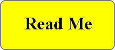

Second Highest (lettering may also be green or red)
 Third Highest
Third Highest Fourth Highest
Fourth HighestFifth Highest

Highest Readability FactorThe high legibility factor is why highway warning signs are
printed in these colors -- high readability in a short amount
of time.
Second Highest (lettering may
also be green or red)
Third Highest
Fourth Highest
Fifth Highest